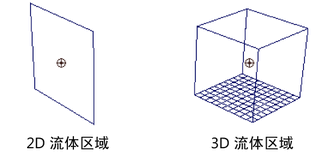

可以创建流体容器，然后添加发射器。发射器自动成为容器的子级，因而，移动容器时发射器随容器一起移动。
创建带有流体发射器的流体容器
- 对于三维流体，请选择>
 。
。 对于 2D 流体，请选择 >
。 此时将显示“创建容器选项”(Create Container Options)窗口。
- 修改选项以定义流体容器的大小和分辨率（如果需要）。
请参见流体 3D/2D 容器选项。
- 修改选项以定义基本发射器属性（如果需要）。请参见流体发射器选项。
- 单击“应用并关闭”(Apply and Close)。
Maya 添加流体发射器并将容器设置为其父对象。默认情况下，将“密度”(Density)和“速度”(Velocity)设定为“动态栅格”(Dynamic Grid)，并在每个体素中将其值设定为 0。“温度”(Temperature)和“燃料”(Fuel)设定为“禁用”(Off)。
 - 在“播放”(Playback)区域中，单击“播放”(Play)按钮以查看流体模拟。
如果是在线框模式下，默认情况下流体会显示为粒子。
若要查看渲染效果的模拟，请切换到着色模式，然后在 fluidShape“属性编辑器”(Attribute Editor)的“显示”(Display)区域中，将“着色显示”(Shaded Display)更改为“已渲染”(As Rendered)。
- 根据需要移动发射器（保持它处于流体容器内），并修改流体容器和流体发射器属性，以达到所需的效果。 注：
如果启用“自动调整大小”(Auto Resize)和“调整到发射器大小”(Resize to Emitter)，流体容器会自动移动到发射器的位置。请参见自动调整大小。